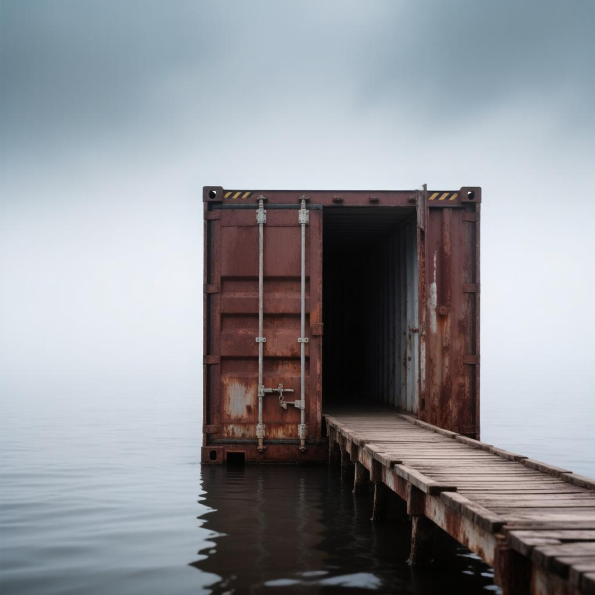

Автор: Sombik808
Дата обнаружения: 16 февраля 2026

Уровень 809 — это одинокий проржавевший промышленный контейнер посреди бескрайнего свинцово-серого моря. Густой липкий туман скрывает горизонт. Вода здесь — смертельный враг. Базовое время выживания — 90 дней. Если Суд признаёт виновным, срок увеличивается до 120 дней.
Единственный способ упасть в воду — споткнуться на шатком внешнем трапе. Некоторые ступеньки сломаны. После 7 мая 2026 года уровень изменился: по периметру контейнера выступили металлические шпильки, позволяющие строить настилы и забираться на крышу.
Искажение времени: 10 дней в контейнере = 1 часу реального мира. Странник, вошедший на уровень в полночь, выйдет в полдень, но его разум запомнит месяцы мучений.
Суд оценивает поступки странника за последние 5 лет:
Контейнер не очищается после ухода странника. Каждый новый обитатель видит следы предыдущих: царапины, обрывки имён, выцветшие рисунки. Через 4-5 странников запись исчезает навсегда.
Свежие царапины содержат призывы к смерти: «Не мучайся. Утонуть проще», «Нож под половицей», «Выпей воды — мучения закончатся». Отличить ложь от правды невозможно.
С каждым днём они убедительнее и чаще: тени в тумане, шаги на крыше, шёпот. Миндальная вода притупляет видения, но не убирает. С 60-го дня — приступы дежавю.
Голоса (дни 70–90): подталкивают к ошибке. «Не мучайся. Просто выпей воды». Если странник находил нож: «У тебя был выход. И ты его не выбрал».
Контакт с морской водой смертелен. Бактерии Aqua Mortem: контакт с кожей → лихорадка 12 часов. Один глоток → смерть через 24 часа.
Иногда температура воздуха меняется. Жара ускоряет обезвоживание, снег усиливает голод. Вода в море не замерзает.
Редкое событие: 5–15 минут вода в море безопасна для питья.
А во время виноградного дождя из неба льётся виноградная вода которая безопасна
Самый жестокий обман уровня. Наступает на 80-й день, когда ты уже почти поверил в спасение.
Ты просыпаешься и выглядываешь наружу. Твой старый трап (или его отсутствие) не важен. Из тумана к нему примыкает идеальный металлический трап: 5 метров блестящего металла, надёжные перила. А в конце — ДВЕРЬ. Та самая, о которой ты мечтал 80 дней.
На стенах в этот день появляются новые надписи: «Выгляни, там выход!», «Молодец, ты заслужил. Посмотри наружу». А голоса, которые раньше шептали о смерти, вдруг меняют тон: «Ладно, ты выиграл. Выход — у трапа», «Поздравляю. Тебя ждёт великое будущее... если выйдешь через дверь».
Странник бежит. Он ступает на металлический трап... И проваливается в ледяную серую воду. Даже если ему чудом удастся выжить и выбраться обратно в контейнер, на оставшиеся 10 дней его преследует жуткое чувство — «Осадочек». Земля уходит из-под ног, хотя ты стоишь на месте.
Серые бочки с едой, водой, иногда миндальной водой. Половина отравлена но это можно определить по запаху винограда. Бочки не тонут, новая партия каждые 2–3 дня.
Менее 2% — свёрток с одеждой. Напоминание, что кто-то был здесь до тебя. Можно использовать как ковёр.
Менее 2% — бутылка с жидкостью, пахнущей виноградом, но действующей как миндальная. Из-за запаха винограда нельзя определить отрава или нет.
В 5% случаев вместо обычной бочки — чёрная бочка с ценным ресурсом. По типу большое количество мендальной воды, медикаменты. Но с вероятностью 75% начинается Красный час (5 часов ада, +10 дней к сроку, вода убивает с прикосновения, небо и вода красного цвета).
Менее 1% в бочках вместо ресурсов может находится нож. На рукаятке надпись «УБЕЙ СЕБЯ». Вызывает шёпот которых побуждает к самоубийству и галлюцинациям. Избавиться — отправить в море (вызовет Красный час).
Уровень 809 — это целая планета, полностью покрытая океаном. Ни суши, ни островов, кроме ржавого контейнера и Острова-миража — единственных твёрдых точек на поверхности.
Масса планеты: чудовищна — 809⁸⁰⁹ грамм. Это число искажает время, гравитацию и реальность.
Дно есть. Но оно недостижимо. Океан не бесконечен. Где-то глубоко внизу — твёрдая поверхность планеты. Но давление, холод, бактерии Aqua Mortem и безумие убивают раньше.
📝 Записка в бочке (2 апреля 2026)
«Пожалуйста, помогите, я умираю, я вынужден пить из моря…»
📱 Находка M.E.G. на дне моря
Водонепроницаемый смартфон. Последний запрос: «КАК ВЫЖИТЬ НА УРОВНЕ 809».
📜 Неудачная стратегия
Стратегия выживания: запомнить своё имя и научиться отличать лево от права. Автор споткнулся о трап на второй день.
4 мая 2026 — в море найдено тело неизвестного странника. Оно в воде, не касаясь дна. На теле — 28 порезов. Рядом нет ножа или острых предметов. Контейнер пуст.
379 дней — трое продержались на уровне. Имена не сохранились: №1 (стратег), №2 (инженер), №3 («третий лишний»). На 379-й день №3 устранил №1 и №2, затем покончил с собой. На стене царапина: «УСТАЛ».
Кто оскверняет воду на любом уровне, телепортируется на 809, услышав перед темнотой: «Это не лучший способ самоубийства. Он более мучительный.»
7 мая 2026 года — уровень изменился: 90 дней ада, шпильки, крыша, эхо и дежавю.
kamar4k - первый кто выжил после суда
В редкие дни в тумане виднеется земля. Подробнее…
Уровень 809 не проверяет твою силу. Он проверяет, кем ты станешь.
Вода убивает. Галлюцинации сводят с ума. Но главный монстр здесь — человек. Ты, твои соседи по контейнеру, странники на острове. Иногда люди страшнее любых сущностей Backrooms.
Выход — это не награда. Это остановка мучений. Ты либо выходишь с болью, либо с чувством вины (ты убил, чтобы выжить), либо с пустотой. Рай на выходе? Нет. Рай — это просто отсутствие ада.
«Серая Гладь не отпускает. Она остаётся с тобой. В шёпоте ветра. В запахе тумана. В пустоте, которая теперь всегда внутри.»
Это не награда. Это ловушка для тех, кто перешёл черту. Если странник с критической меткой «испорченности» (убийства, предательства, уничтожение чужой «памяти стен») попадает на уровень 809, он не видит серого контейнера. Только белую комнату. И голоса.
Вход: окунуться в воду на 1 минуту в Level 7, 7.2, 37, 37.01, 100, 103, 375.
Выход: через 90 дней (120 если виновен) сознание отключается, странник просыпается на случайном уровне Class 2 с бутылкой миндальной воды.